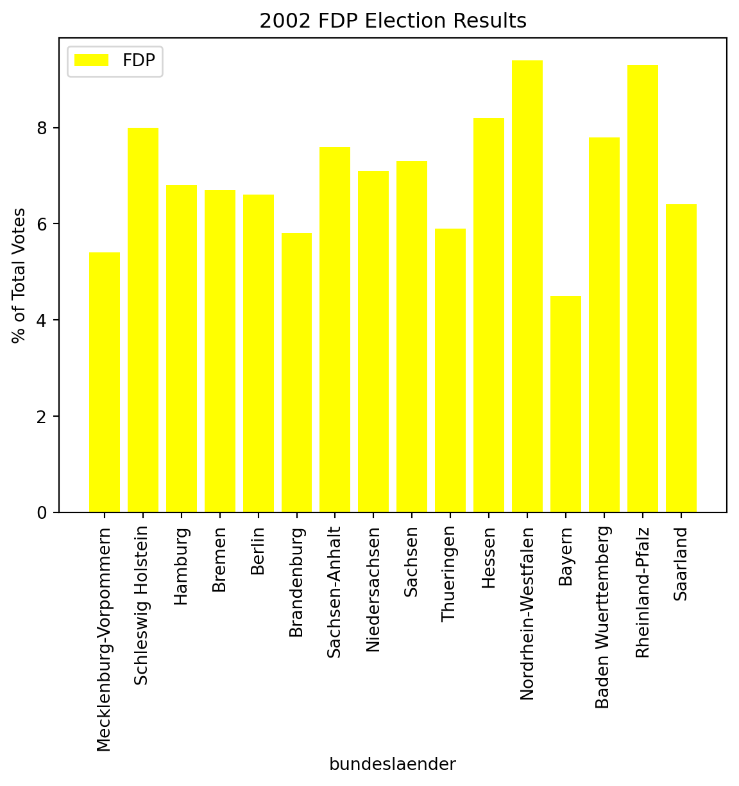

import matplotlib.pyplot as plt
import numpy as np
import pandas as pd
import statisticstitle: This will be a basic demonstration of different visuals to represent data. THe dataset chosen is going to be electoral results from the 2002 German federal election. Each of the main parties’ results were taken and analyzed at a Bundesland (State) level and then visualized both independently and in common spaces. The following data are from 2002 wherein the SPD (Social Democratic Party of Germany) and the Greens won the election as a coalition and remained in power. An important thing to note is that elections in the Bundestag work differently than the US. The system over there has a plurality of political parties, with no one party maintaining dominance over others. This often results in different parties needing to form coalitions with each other in order to win elections and rule the country with the largest party of the coalition usually being the one whose leader becomes Kanzler or Kanzlerin. jupyter: python3
Let’s begin with this foray into data visualization. Sections below will have German as comments that will split each section that describe the data in them. The Bundestag Sitzplaetze section contains the number of Bundestag seats each party had out of the total seats that it had that year. Sections beneath will report the results for each party by Bundesland and by percent of the votes of that Bundesland that they won.
One last important detail before getting to code and visualizations is the clarification of potential action-target pairs present in this post. The desired action here is for viewers to analyze and consume trends and outliers present in the 2002 german election. Another desired action is for viewers to identify and compare attributes of the election like the location of party strongholds and distributions of where certain parties were most successful.
2002 Bundestag sitzplaetze resultaten
SPD02 = 251/603;
CDU02 = 190/603;
CSU02 = 58/603;
Bund02 = 55/603;
FDP02 = 47/603;
PDS02 = 2/603;
Union02=CDU02+CSU02;Resultaten Fuer SPD 2002 bei Bundesland in prozent
SPD02MV = 41.7;
SPD02SH = 42.9;
SPD02HM = 42;
SPD02BR = 48.6;
SPD02BL = 36.6;
SPD02BB = 46.4;
SPD02SA = 43.2;
SPD02NS = 47.8;
SPD02SN = 33.3;
SPD02TH = 39.9;
SPD02HN = 39.7;
SPD02NW = 43;
SPD02BY = 26.1;
SPD02BW = 33.5;
SPD02RP = 38.2;
SPD02SL = 46;
SPD02DE = np.array([SPD02MV,SPD02SH,SPD02HM,SPD02BR,SPD02BL,SPD02BB,SPD02SA,SPD02NS,SPD02SN,SPD02TH,SPD02HN,SPD02NW,SPD02BY,SPD02BW,SPD02RP,SPD02SL]);Resultaten fuer Union (UN) 2002 bei Bundesland in prozent
UN02MV = 30.3;
UN02SH = 36;
UN02HM = 42;
UN02BR = 24.6;
UN02BL = 25.9;
UN02BB = 22.3;
UN02SA = 29;
UN02NS = 34.5;
UN02SN = 33.6;
UN02TH = 29.4;
UN02HN = 37.1;
UN02NW = 35.1;
UN02BY = 58.6;
UN02BW = 42.8;
UN02RP = 40.3;
UN02SL = 35;
UN02DE = np.array([UN02MV,UN02SH,UN02HM,UN02BR,UN02BL,UN02BB,UN02SA,UN02NS,UN02SN,UN02TH,UN02HN,UN02NW,UN02BY,UN02BW,UN02RP,UN02SL]);Resultaten fuer Buendnis/Die Gruene 2002 bei Bundesland in prozent
BG02MV = 3.5;
BG02SH = 9.4;
BG02HM = 16.2;
BG02BR = 15;
BG02BL = 14.6;
BG02BB = 4.5;
BG02SA = 3.4;
BG02NS = 7.3;
BG02SN = 4.6;
BG02TH = 4.3;
BG02HN = 10.7;
BG02NW = 8.9;
BG02BY = 7.6;
BG02BW = 11.4;
BG02RP = 7.9;
BG02SL = 7.6;
BG02DE = np.array([BG02MV,BG02SH,BG02HM,BG02BR,BG02BL,BG02BB,BG02SA,BG02NS,BG02SN,BG02TH,BG02HN,BG02NW,BG02BY,BG02BW,BG02RP,BG02SL]);Resultaten fuer FDP 2002 bei Bundesland in Prozent
FDP02MV = 5.4;
FDP02SH = 8;
FDP02HM = 6.8;
FDP02BR = 6.7;
FDP02BL = 6.6;
FDP02BB = 5.8;
FDP02SA = 7.6;
FDP02NS = 7.1;
FDP02SN = 7.3;
FDP02TH = 5.9;
FDP02HN = 8.2;
FDP02NW = 9.4;
FDP02BY = 4.5;
FDP02BW = 7.8;
FDP02RP = 9.3;
FDP02SL = 6.4;
FDP02DE = np.array([FDP02MV,FDP02SH,FDP02HM,FDP02BR,FDP02BL,FDP02BB,FDP02SA,FDP02NS,FDP02SN,FDP02TH,FDP02HN,FDP02NW,FDP02BY,FDP02BW,FDP02RP,FDP02SL]);Resultaten fuer PDS 2002 bei Bundesland in Prozent
PDS02MV = 16.3;
PDS02SH = 1.3;
PDS02HM = 2.1;
PDS02BR = 2.2;
PDS02BL = 11.4;
PDS02BB = 17.2;
PDS02SA = 14.4;
PDS02NS = 1;
PDS02SN = 16.2;
PDS02TH = 17;
PDS02HN = 1.3;
PDS02NW = 1.2;
PDS02BY = 0.7;
PDS02BW = 1;
PDS02RP = 1;
PDS02SL = 1.4;
PDS02DE = np.array([PDS02MV,PDS02SH,PDS02HM,PDS02BR,PDS02BL,PDS02BB,PDS02SA,PDS02NS,PDS02SN,PDS02TH,PDS02HN,PDS02NW,PDS02BY,PDS02BW,PDS02RP,PDS02SL]);Bundesland results by Bundesland comparing the votes percentages each party got in that Bundesland.
MV02 = np.array([SPD02MV, UN02MV,BG02MV,FDP02MV,PDS02MV]);
SH02 = np.array([SPD02SH, UN02SH,BG02SH,FDP02SH,PDS02SH]);
HM02 = np.array([SPD02HM, UN02HM,BG02HM,FDP02HM,PDS02HM]);
BR02 = np.array([SPD02BR, UN02BR,BG02BR,FDP02BR,PDS02BR]);
BL02 = np.array([SPD02BL, UN02BL,BG02BL,FDP02BL,PDS02BL]);
BB02 = np.array([SPD02BB, UN02BB,BG02BB,FDP02BB,PDS02BB]);
SA02 = np.array([SPD02SA, UN02SA,BG02SA,FDP02SA,PDS02SA]);
NS02 = np.array([SPD02NS, UN02NS,BG02NS,FDP02NS,PDS02NS]);
SN02 = np.array([SPD02SN, UN02SN,BG02SN,FDP02SN,PDS02SN]);
TH02 = np.array([SPD02TH, UN02TH,BG02TH,FDP02TH,PDS02TH]);
HN02 = np.array([SPD02HN, UN02HN,BG02HN,FDP02HN,PDS02HN]);
NW02 = np.array([SPD02NW, UN02NW,BG02NW,FDP02NW,PDS02NW]);
BY02 = np.array([SPD02BY, UN02BY,BG02BY,FDP02BY,PDS02BY]);
BW02 = np.array([SPD02BW, UN02BW,BG02BW,FDP02BW,PDS02BW]);
RP02 = np.array([SPD02RP, UN02RP,BG02RP,FDP02RP,PDS02RP]);
SL02 = np.array([SPD02SL, UN02SL,BG02SL,FDP02SL,PDS02SL]);What follows next will be a set of visualizations for the data from above. The first bar graph beneath will include all of the parties results for each Bundesland stacked next to each other for that specific Bundesland. An important side note is that abbreviations are used in the legend. The main ones that may be confusing are the BG90 and Union parties. BG90 is short for Buendnis 90/Die Gruene, this is party are the Greens. Union on the other hand is a coalition between the CSU and CDU parties which are centre right political parties.
Bundeslaender = np.array(['Mecklenburg-Vorpommern','Schleswig Holstein','Hamburg','Bremen','Berlin','Brandenburg','Sachsen-Anhalt','Niedersachsen','Sachsen','Thueringen','Hessen','Nordrhein-Westfalen','Bayern','Baden Wuerttemberg','Rheinland-Pfalz','Saarland']);
Laender = np.array([1 ,3, 5, 7,9, 11, 13, 15,17, 19, 21, 23,25, 27, 29, 31]);
plt.bar(Laender -0.1, SPD02DE, 0.4, label = 'SPD',color='red')
plt.bar(Laender - 0.5, UN02DE, 0.4, label = 'Union',color='black')
plt.bar(Laender - 0.9, BG02DE, 0.4, label = 'BG90',color='green')
plt.bar(Laender + 0.3, FDP02DE, 0.4, label = 'FDP',color='#FFFF00')
plt.bar(Laender + 0.8, PDS02DE, 0.4, label = 'PDS',color='#A2142F')
plt.xticks(Laender,Bundeslaender,rotation=90)
plt.ylabel("% of Total Votes")
plt.xlabel("Bundeslaender")
plt.title("2002 German Election Results")
plt.legend()
plt.show() Next will be a bar graph just like above, except the parties’ results are overlaid on to one another. Both of these bar graphs will be pertinent in a future post regarding marks and channels used in visualizations.
Bundeslaender = np.array(['Mecklenburg-Vorpommern','Schleswig Holstein','Hamburg','Bremen','Berlin','Brandenburg','Sachsen-Anhalt','Niedersachsen','Sachsen','Thueringen','Hessen','Nordrhein-Westfalen','Bayern','Baden Wuerttemberg','Rheinland-Pfalz','Saarland']);
Laender = np.array([1 ,2, 3, 4,
5, 6, 7, 8,
9, 10, 11, 12,
13, 14, 15, 16]);
plt.bar(Laender, SPD02DE, label = 'SPD',color='red')
plt.bar(Laender, UN02DE, label = 'Union',color='black')
plt.bar(Laender, BG02DE, label = 'SPDE',color='green')
plt.bar(Laender, FDP02DE, label = 'FDP',color='#FFFF00')
plt.bar(Laender, PDS02DE, label = 'PDS',color='#A2142F')
plt.xticks(Laender,Bundeslaender,rotation=90)
plt.ylabel("% of Total Votes")
plt.xlabel("Bundeslaender")
plt.title("2002 German Election Results")
plt.legend()
plt.show() Beneath will be a set of bar grpahs that present the results for individual parties in each Bundesland in Germany. The first will be the winning party, SPD.
Bundeslaender = np.array(['Mecklenburg-Vorpommern','Schleswig Holstein','Hamburg','Bremen','Berlin','Brandenburg','Sachsen-Anhalt','Niedersachsen','Sachsen','Thueringen','Hessen','Nordrhein-Westfalen','Bayern','Baden Wuerttemberg','Rheinland-Pfalz','Saarland']);
Laender = np.array([1 ,2, 3, 4,
5, 6, 7, 8,
9, 10, 11, 12,
13, 14, 15, 16]);
plt.bar(Laender, SPD02DE, label = 'SPD',color='red')
plt.xticks(Laender,Bundeslaender,rotation=90)
plt.ylabel("% of Total Votes")
plt.xlabel("Bundeslaender")
plt.title("2002 SPD Election Results")
plt.legend()
plt.show() Next will be the Union party
Bundeslaender = np.array(['Mecklenburg-Vorpommern','Schleswig Holstein','Hamburg','Bremen','Berlin','Brandenburg','Sachsen-Anhalt','Niedersachsen','Sachsen','Thueringen','Hessen','Nordrhein-Westfalen','Bayern','Baden Wuerttemberg','Rheinland-Pfalz','Saarland']);
Laender = np.array([1 ,2, 3, 4,
5, 6, 7, 8,
9, 10, 11, 12,
13, 14, 15, 16]);
plt.bar(Laender, UN02DE, label = 'Union',color='black')
plt.xticks(Laender,Bundeslaender,rotation=90)
plt.ylabel("% of Total Votes")
plt.xlabel("Bundeslaender")
plt.title("2002 Union Election Results")
plt.legend()
plt.show() Results for Buendnis 90/ Die Gruene
Bundeslaender = np.array(['Mecklenburg-Vorpommern','Schleswig Holstein','Hamburg','Bremen','Berlin','Brandenburg','Sachsen-Anhalt','Niedersachsen','Sachsen','Thueringen','Hessen','Nordrhein-Westfalen','Bayern','Baden Wuerttemberg','Rheinland-Pfalz','Saarland']);
Laender = np.array([1 ,2, 3, 4,
5, 6, 7, 8,
9, 10, 11, 12,
13, 14, 15, 16]);
plt.bar(Laender, BG02DE, label = 'BG90',color='green')
plt.xticks(Laender,Bundeslaender,rotation=90)
plt.ylabel("% of Total Votes")
plt.xlabel("Bundeslaender")
plt.title("2002 BG90 Election Results")
plt.legend()
plt.show() 
The bar graph beneath for the FDP in 2002 is an important lesson in choosing colors wisely when presenting data. In the form directly beneath, the yellow on top of white is glaringly bright and makes distinction of votes percentages far more difficult.
Bundeslaender = np.array(['Mecklenburg-Vorpommern','Schleswig Holstein','Hamburg','Bremen','Berlin','Brandenburg','Sachsen-Anhalt','Niedersachsen','Sachsen','Thueringen','Hessen','Nordrhein-Westfalen','Bayern','Baden Wuerttemberg','Rheinland-Pfalz','Saarland']);
Laender = np.array([1 ,2, 3, 4,
5, 6, 7, 8,
9, 10, 11, 12,
13, 14, 15, 16]);
plt.bar(Laender, FDP02DE, label = 'FDP',color='#FFFF00')
plt.xticks(Laender,Bundeslaender,rotation=90)
plt.ylabel("% of Total Votes")
plt.xlabel("bundeslaender")
plt.title("2002 FDP Election Results")
plt.legend()
plt.show() 
Instead, let’s change the background to blue with an unintended consequence that it now looks like a very poorly done offbrand ikea illustration. However, with the blue background the ability to determine the percentage that the SPD earned in each state is much easier. I did try using black but very quickly realized that black made it very difficult to see where the percentages are as well.
Bundeslaender = np.array(['Mecklenburg-Vorpommern','Schleswig Holstein','Hamburg','Bremen','Berlin','Brandenburg','Sachsen-Anhalt','Niedersachsen','Sachsen','Thueringen','Hessen','Nordrhein-Westfalen','Bayern','Baden Wuerttemberg','Rheinland-Pfalz','Saarland']);
Laender = np.array([1 ,2, 3, 4,
5, 6, 7, 8,
9, 10, 11, 12,
13, 14, 15, 16]);
plt.bar(Laender, FDP02DE, label = 'FDP',color='#FFFF00')
ax = plt.gca()
# Setting Background colour yellow
ax.set_facecolor("blue")
plt.xticks(Laender,Bundeslaender,rotation=90)
plt.ylabel("% of Total Votes")
plt.xlabel("bundeslaender")
plt.title("2002 FDP Election Results")
plt.legend()
plt.show() Beneath will be the final party of 2002 being looked at, the PDS who have since renamed to Die Linke (The Left).
Bundeslaender = np.array(['Mecklenburg-Vorpommern','Schleswig Holstein','Hamburg','Bremen','Berlin','Brandenburg','Sachsen-Anhalt','Niedersachsen','Sachsen','Thueringen','Hessen','Nordrhein-Westfalen','Bayern','Baden Wuerttemberg','Rheinland-Pfalz','Saarland']);
Laender = np.array([1 ,2, 3, 4,
5, 6, 7, 8,
9, 10, 11, 12,
13, 14, 15, 16]);
plt.bar(Laender, PDS02DE, label = 'PDS',color='#A2142F')
plt.xticks(Laender,Bundeslaender,rotation=90)
plt.ylabel("% of Total Votes")
plt.xlabel("Bundeslaender")
plt.title("2002 PDS Election Results")
plt.legend()
plt.show()